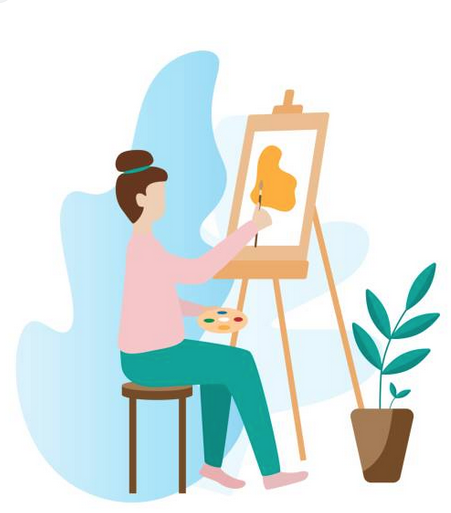

The 4 Elements
For my UX Design Thinking class we were tasked with creating a logo and name for our group project. My group decided on the name "The 4 Elements" and this is the logo I created. We decided on The 4 Elements because we are all different but we are bringing our own ideas to this group project to come together.
United Cafe
In high school we were tasked with creating a mock up restaurant website. For this restaurant we had to created a floor plan of the store, the outside of the store, a menu, logo, and name. I decided to create United Cafe as my mock design. This was one of the first things I ever designed and was one of the reasons why I decided to go to school for designing as this was my favourite project. Looking back on this project after 5 years there are many things that I could do better with the experience I have now.

Jessie's Teaching Corner
This logo was an updated logo for the website Jessie's Teaching Corner. This website was created to help new teachers with different lesson plans and information. The original logo was just a plan J with nothing special about it. The owner wanted something that represented both teaching and herself. The J was for herself and the apple was to represent teachers.
My Angle

An important part of designing is to ensure that the design is visually accessible. You want to ensure that you are able to see what the image is meant to be and effectively communicate through design. Something that is visually accessible “refers to the clarity of the images, text and other design elements” (Cornish et al. 178). When designing the design must be inclusive and is directed at their specific target audiences. In addition, there are also different design recommendations for people with cognitive disabilities. It is important to design products that are available for everyone.
The reason I mentioned the visually accessible design logos is because our society needs to become more accessible for everyone. For my logos, making them minimal and easily describable adds to making them visually accessible. It is important to focus on future designs to ensure that they are inclusive and visually accessible for everyone who will be interacting with it.
References
- Cornish, Katie, et al. “Visual Accessibility in Graphic Design: A Client
–Designer Communication Failure.” Design Studies, vol. 40, 2015, pp. 176–195.,
doi:10.1016/j.destud.2015.07.003.
- Friedman, Mark G., and Diane Nelson Bryen. “Web Accessibility Design
Recommendations for People with Cognitive Disabilities.” Technology and
Disability, vol. 19, no. 4, 2008, pp. 205–212., doi:10.3233/tad-2007-19406.